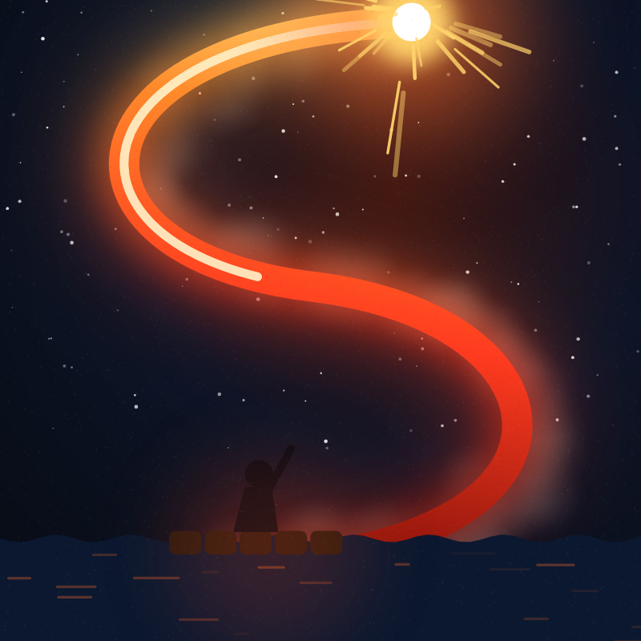

ANIMATED STORIES
SURVRA
Survra is a YouTube channel that tells incredible true stories as fast, original animations: survival against the odds, impossible escapes, and the people who lived through them.
Every story is researched from published sources, which are listed in each video's description.
Survra Studio
Survra Studio is the channel's private production tool. It uses the YouTube Data API to upload and schedule Survra's own videos and the YouTube Analytics API to read the channel's own performance reports. It is used only by the channel owner and is not offered to other users.